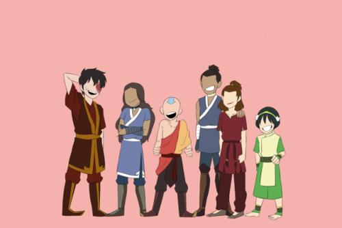

About Aang
Aang was a male Air Nomad born in 12 BG and the Avatar during the century-long conflict known as the Hundred Year War. His immediate predecessor was Avatar Roku,[7] and his immediate successor is Avatar Korra. As the Avatar of his time, he was the only person capable of using all four bending arts: airbending, waterbending, earthbending, and firebending.
Team Avatar
Aang's Characteristics
- He's goofy and fun-loving
- He is determined to fulfill his destiny
- He is loving & compassionate
Aang's Friends
Aang travels the world with his friends Katara, Sokka, Toph, Zuko and Suki. Click on the links below to read more about them.